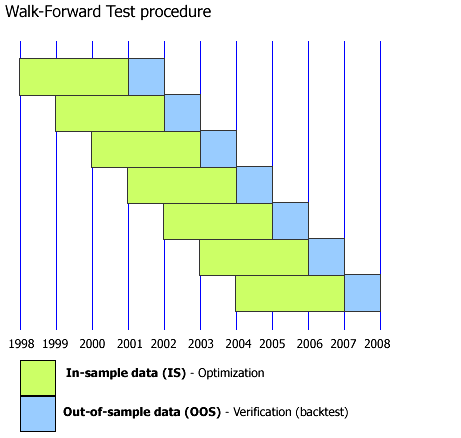
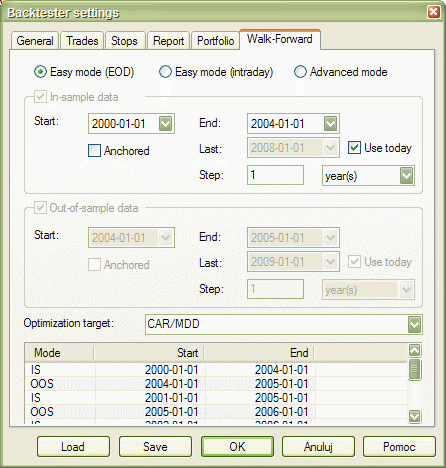

AmiBroker 5.10 features the automatic Walk-Forward test mode.
The automatic walk-forward test is a system design and validation technique in which you optimize the parameter values on a past segment of market data (”in-sample”), then verify the performance of the system by testing it forward in time on data following the optimization segment (”out-of-sample”). You evaluate the system based on how well it performs on the test data (”out-of-sample”), not the data it was optimized on. The process can be repeated over subsequent time segments. The following illustration shows how the process works.

The purpose of a walk-forward test is to determine whether the performance of an optimized trading system is realistic or the result of curve-fitting. The performance of the system can be considered realistic if it has predictive value and performs well on unseen (out-of-sample) market data. When the system is properly designed, the real-time trading performance should be consistent with that uncovered during optimization. If the system is going to work in real trading, it must first pass a walk-forward test. In other words, we don't really care about in-sample results, as they are (or should be) always good. What matters is out-of-sample system performance. It is a realistic estimate of how the system would work in real trading and will quickly reveal any curve-fitting issues. If out-of-sample performance is poor, then you should not trade such a system.
The premise of performing several optimization/test steps over time is that
the recent past is a better foundation for selecting system parameter values
than the distant past. We hope that the parameter values chosen on the
optimization segment will be well suited to the market conditions that immediately
follow. This may or may not be the case as markets go through bear/bull cycles,
so care should be taken when choosing the length of the in-sample period. For more
information about system design and verification using the walk-forward procedure
and all issues involved, we recommend Howard Bandy's book: "Quantitative
Trading Systems" (see links on AmiBroker page).
To use walk-forward optimization, please follow these steps:

IN-SAMPLE and OUT-OF-SAMPLE combined equity
Combined in-sample and out-of-sample equities are available via
~~~ISEQUITY and ~~~OSEQUITY composite tickers (consecutive periods of IS and
OOS are concatenated and scaled to
maintain continuity of the equity line - this approach assumes that you, generally speaking, are compounding profits).
To display IS and OOS equity, you may use, for example, this:
PlotForeign("~~~ISEQUITY","In-Sample Equity", colorRed, styleLine);
PlotForeign("~~~OSEQUITY","Out-Of-Sample Equity", colorGreen, styleLine);
Title = "{{NAME}} - {{INTERVAL}} {{DATE}} {{VALUES}}";
OUT-OF-SAMPLE summary report (new in 5.60)
Version 5.60 brings a new walk-forward summary report that covers all out-of-sample
steps. It is visible in the
Report Explorer as the last one and has "PS" type.
There were significant changes to walk-forward testing made to allow a summary
out-of-sample report.
The most important change is that each subsequent out-of-sample test uses initial
equity equal to the previous step's ending equity.
(Previously, it used constant initial equity.)
This change is required for proper calculation of all statistics/metrics throughout
all sections of the out-of-sample test.
The summary report shows a note that built-in metrics correctly represent all
out-of-sample steps,
but summary custom metrics are composed using a user-definable method:
1. first step value, 2. last step value, 3. sum, 4. average, 5. minimum, 6. maximum.
By default, the summary report shows the last step value of custom metrics UNLESS the user
specifies a different combining method in
bo.AddCustomMetrics() call.
bo.AddCustomMetrics now has a new optional parameter - CombineMethod
bool AddCustomMetric( string Title, variant Value, [optional] variant LongOnlyValue, [optional] variant ShortOnlyValue , [optional] variant DecPlaces = 2, [optional] variant CombineMethod = 2 )
This method adds a custom metric to the backtest report, backtest "summary", and the optimization result list. Title is the name of the metric to be displayed in the report, Value is the value of the metric. Optional arguments LongOnlyValue, ShortOnlyValue allow providing values for additional long/short-only columns in the backtest report. The last argument, DecPlaces, controls how many decimal places should be used to display the value.
Supported CombineMethod values are:
1. First step value - the summary report will show the value of the custom metric from
the very first out-of-sample step.
2. Last step value (default) - the summary report will show the value of the custom
metric from the last out-of-sample step.
3. Sum - the summary report will show the sum of the values of the custom metric from
all out-of-sample steps.
4. Average - the summary report will show the average of the values of the custom metric
from all out-of-sample steps.
5. Minimum - the summary report will show the smallest value of the custom metric from
all out-of-sample steps.
6. Maximum - the summary report will show the largest value of the custom metric from
all out-of-sample steps.
Note that certain metrics calculation methods are complex, and, for example, averaging them would not lead to a mathematically correct representation of all out-of-sample tests.
Summaries of all built-in metrics are mathematically correct out-of-the-box
(i.e., they are *not* averages but properly calculated metrics using a method
that is appropriate for a given value). This contrasts with custom metrics, because
they are user-definable, and it is up to the user to select a 'combining' method.
Still, it may happen that none of the available methods is appropriate.
For that reason, the report includes a note that explains what user-definable
method was used to combine custom metrics.